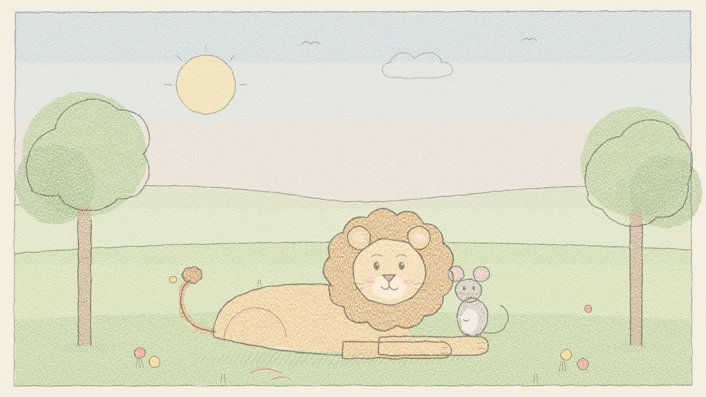

Sư tử và chuột nhắt: truyện kể trước giờ ngủ cho bé, bản kể lại (theo Aesop)
Sư tử và chuột nhắt, truyện ngụ ngôn của Aesop, kể lại bằng lời của chúng tôi cho giờ đi ngủ, theo The Aesop for Children của Thư viện Quốc hội Mỹ. Chú sư tử thả cô chuột nhỏ, và một ngày cô gặm lưới cứu chú. Trong tập này: - Chú sư tử ngủ say và một lời hứa nhỏ - Mắc lưới, và một tiếng gầm - Gặm, gặm: việc tốt chẳng bao giờ uổng phí Nguồn: The Lion & the Mouse, Aesop, The Aesop for Children Nhạc: Kevin MacLeod (incompetech.com), CC BY 4.0 Những câu chuyện nhẹ nhàng cho giờ đi ngủ và giờ kể chuyện, được kể chậm rãi bằng một giọng đọc ấm áp. luongnv.com/podcast/stories
Nghe trên Once Upon a Time Show Tải MP3 Lời kể
Truyện này còn có bản: English
Dựa theo The Lion & the Mouse của Aesop
Lời kể
Người kể chuyện: Chào mừng các bạn đến với Once Upon a Time Show. Đến giờ nghe chuyện trước khi ngủ rồi. Chào bé yêu. Bé rúc vào chăn cho thật ấm nhé. Câu chuyện tối nay đã có từ rất, rất lâu rồi. Đó là một truyện ngụ ngôn của Aesop, và chúng mình kể lại bằng lời của chúng mình. Đây là chuyện về một chú sư tử thật to và một cô chuột thật nhỏ. Bé đoán xem ai sẽ giúp ai nào? Mình cùng nghe nhé. Ngày xửa ngày xưa, trong một khu rừng xanh ấm áp, có một chú sư tử to lớn đang ngủ say. Bờm vàng của chú mềm mại như bông. Cái đầu to của chú gối lên đôi chân to. Và chú ngáy khe khẽ. Khò khò. Khò khò. Gần đó có một cô chuột nhắt, đôi tai hồng tròn xoe và cái đuôi dài mảnh. Cô chuột nhỏ xíu, nhút nhát, lúc nào cũng vội vội vàng vàng.
Hôm ấy, cô chuột đang vội về nhà, lạch bạch, lạch bạch, qua đám cỏ cao. Cô chẳng nhìn đường gì cả. Thế là ối! Cô chạy ngang qua ngay chóp mũi của chú sư tử. Nhột, nhột quá! Chú sư tử mở một con mắt vàng to. Rồi mở con mắt kia. Chú nhẹ nhàng đặt bàn chân nặng trịch xuống, để cô chuột không chạy mất. Xin chú tha cho cháu, cô chuột nói bằng giọng bé xíu. Nếu chú thả cháu ra, một ngày nào đó cháu sẽ giúp chú. Cháu hứa đấy. Chú sư tử mỉm cười. Một con chuột nhỏ xíu mà giúp được sư tử to lớn ư? Buồn cười quá! Nhưng chú sư tử rất tốt bụng. Chú nhấc chân lên, và cô chuột chạy tót về nhà. Vài ngày sau, chú sư tử đang đi dạo trong rừng. Bỗng nhiên, chú bước trúng tấm lưới của một người thợ săn!
Những sợi dây vừa to vừa chắc. Chú càng vùng vẫy, lưới càng siết chặt. Chú không sao thoát ra được. Thế là chú sư tử gầm lên. Một tiếng gầm thật to vang khắp khu rừng, vọng tới tận nhà cô chuột nhỏ. Cô chuột nhận ra giọng ấy ngay. Bạn sư tử của mình đấy, cô nói. Rồi cô chạy đi, nhanh hết sức đôi chân bé xíu của mình. Cô tìm thấy chú sư tử đang mắc kẹt trong tấm lưới. Chú đừng lo, cô nói. Có cháu đây rồi. Cô leo lên một sợi dây to. Rồi bằng những chiếc răng nhỏ sắc, cô bắt đầu gặm. Gặm, gặm, gặm. Phựt! Sợi dây đứt. Rồi sợi nữa, sợi nữa. Chẳng mấy chốc, chú sư tử to lớn đã bước ra khỏi tấm lưới, tự do.
Hôm trước chú cười khi cháu nói sẽ giúp chú, cô chuột nói. Giờ chú thấy rồi đấy, ngay cả một con chuột nhỏ cũng giúp được sư tử. Và chú sư tử nói: cảm ơn cháu, người bạn nhỏ của ta. Từ hôm ấy, chú sư tử và cô chuột trở thành đôi bạn thân. Vì một việc tốt chẳng bao giờ là uổng phí cả. Giờ thì khu rừng đã yên tĩnh. Ông trăng đã lên, tròn và sáng bạc. Chú sư tử nằm cuộn tròn dưới gốc cây to, còn cô chuột nhỏ rúc vào bờm mềm của chú. Bé nhắm mắt lại nhé. À ơi, à ơi. Thở vào thật chậm, thở ra thật chậm. Once Upon a Time Show chúc bé ngủ ngon và có những giấc mơ thật đẹp.